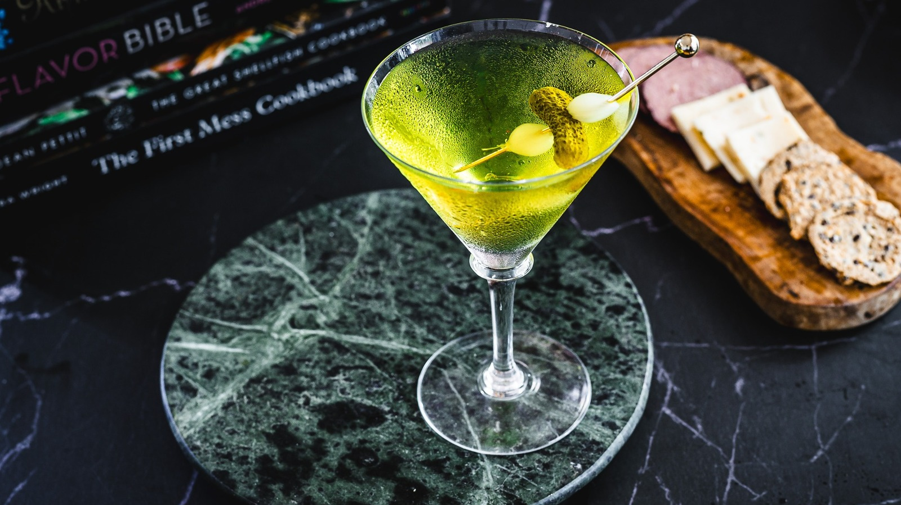

Onion Ogre-tini

Introducing the 'Onion Ogre-tini,' crafted with a mix of gin, vermouth, onions, and a touch of absinthe, this martini is a bold and distinctive concoction that pays tribute to Shrek's famously complex character. This martini is the embodiment of the phrase 'like an onion, it's got layers' in a glass, just like Shrek himself.
Ingredients
-
1 oz gin
-
1/2 oz dry vermouth
-
1/2 oz absinthe
-
1 or 3 cocktail onions, for garnish
-
1 gherkin, for garnish
Steps
-
In a mixing glass filled with ice cubes, pour the gin, dry vermouth, and absinthe.
-
Stir well.
-
Strain into a chilled cocktail glass.
-
Garnish with cocktail onions and gherkin.
-
Sip the Onion Ogre-tini and you'll feel like you're transported to Shrek's swamp, savoring the flavors of an unconventional hero with a heart of gold.
Go Back